Characters
Characters Places
Places Stories
Stories Species
Species Organizations
Organizations Glossary
Glossary Transportation
Transportation Monsters
Monsters Jobs
Jobs Summons
Summons Items
Items Magic/Skills
Magic/Skills Weapon Types
Weapon Types In-Crossovers
In-Crossovers Ex-Crossovers
Ex-Crossovers Release Dates
Release Dates Name Origins
Name Origins Famous Moments
Famous Moments Music Database
Music Database Features
Features Game Help
Game Help Game Evolution
Game Evolution Square Art
Square Art Fan Flash
Fan Flash Final Fantasy Forums
Final Fantasy Forums Updates
Updates Site Info
Site Info Feedback
Feedback Full Index
Full Index Links
Links Staff
StaffRed Mage
Appearances: FF1, FF3, FF4, FF5, FF11, FFTA, FFTA2Aliases: Red Wizard, Sage
Red Mages are the only class that can cast two vastly different kinds of magic - white and black, making them a "jack-of-all-trades". The disadvantage is it cannot cast very powerful magic from either color, so being proficient in many arts, it is a master of none. FF5 and FFTA tried to make them more useful by increasing the frequency of their spellcasting with Doublecast, but the AP needed to obtain this ability was often too high. Red Mages were popular in the early games, then became obsolete due to character-based parties and mix-and-match magic systems (although they might be making a comeback with their relatively high distribution in FF11). Their outfits typically consist of a feathered hunter's hat and red cape.
Similar Job Classes: White Mage, Black Mage, Blue Mage
Expand All Images | Collapse All Images
|
 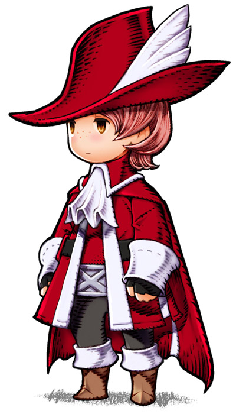
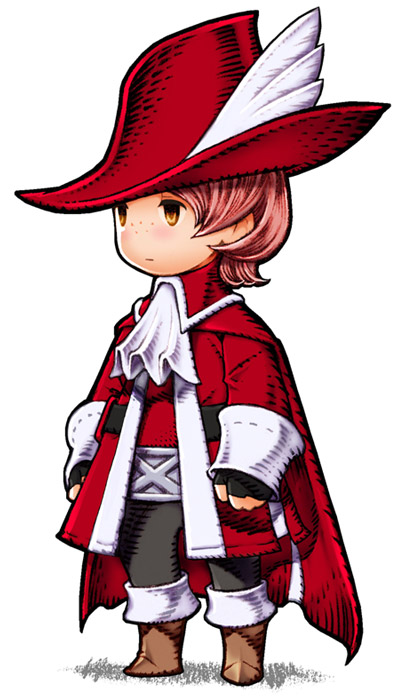 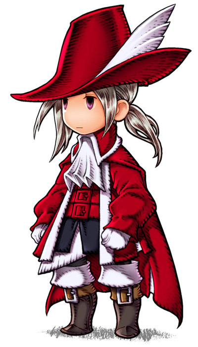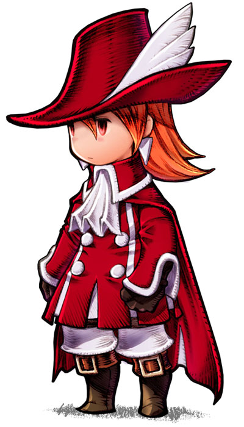
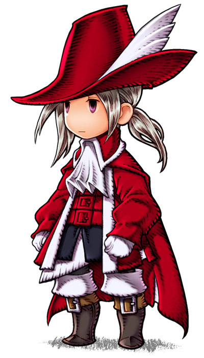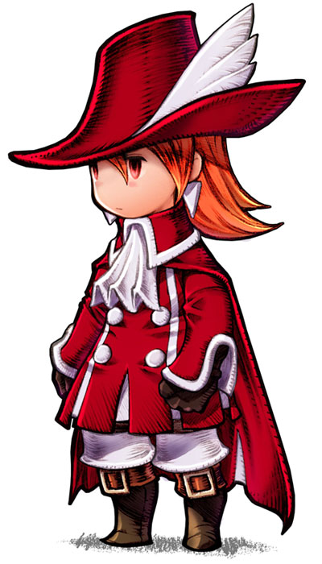
|
 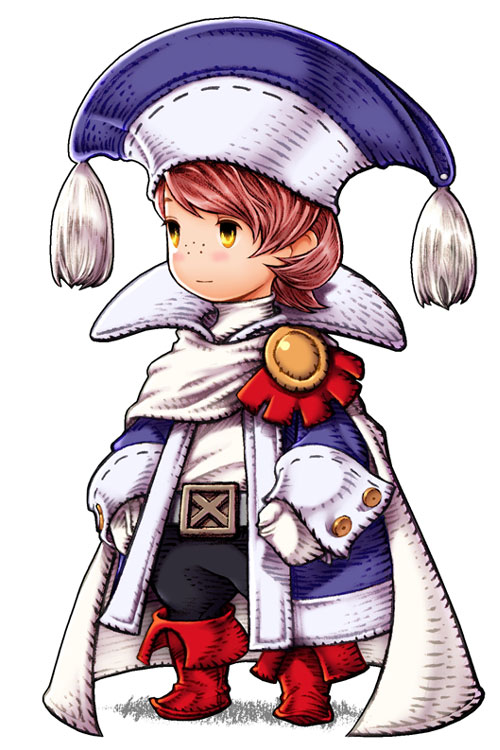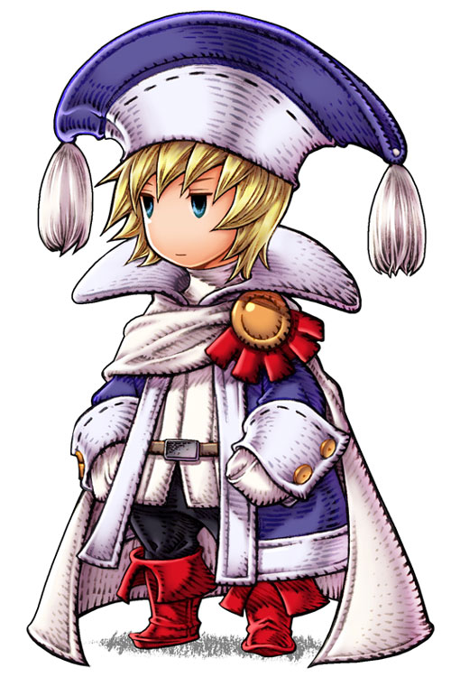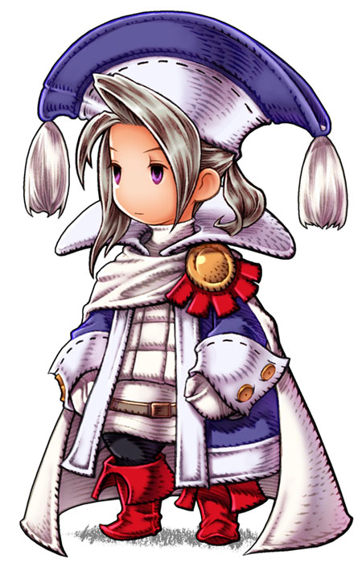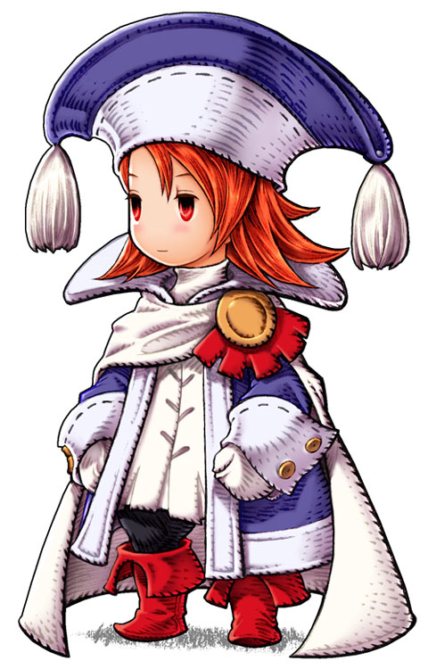
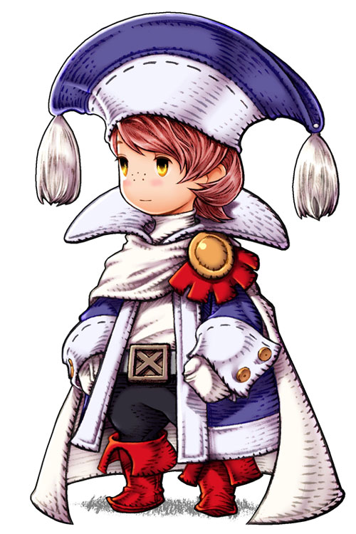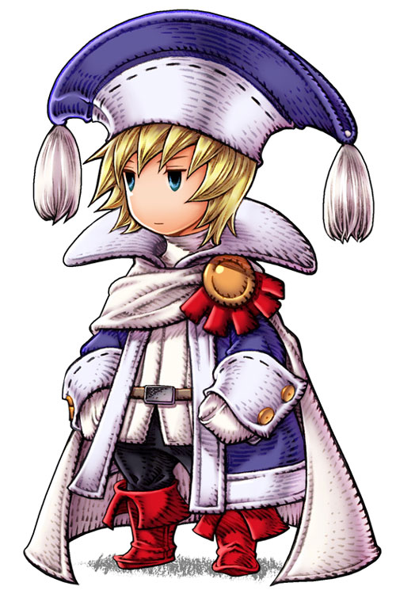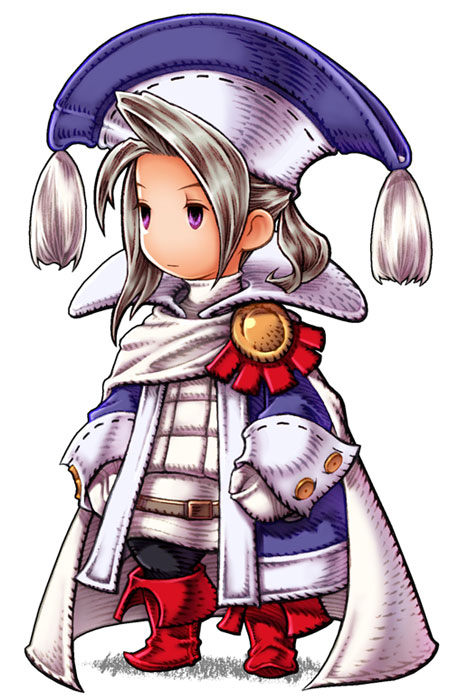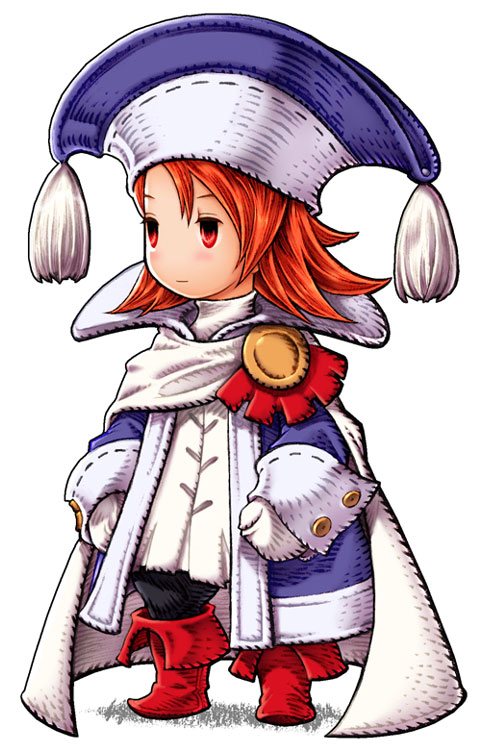
|
|
|
|
|


|


Traits of Red Mage in Other Games
| FF4: Rydia can cast Black and White magic as a kid, but only for a short time, and only very low level spells. |
| FF6: The Gem Box relic (known as Soul of Thamasa in FF6 Advance), allows the wearer to perform Doublecast. |
| FF9: Red Mages appear around the game as NPCs. |
| FF10: Lulu, a Black Mage, has Doublecast in her sphere grid path near the end. |
Final Fantasy, all games and animation bearing the Final Fantasy name, and all characters in said games or animation are copyright their respective creators, including but not limited to Squaresoft, Square Enix, Square EA, Tokyo TV, and ADV Films.